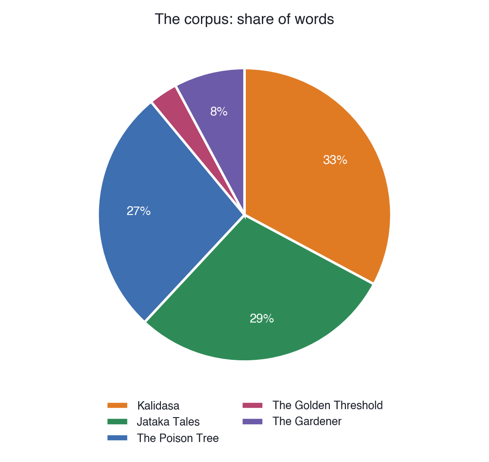
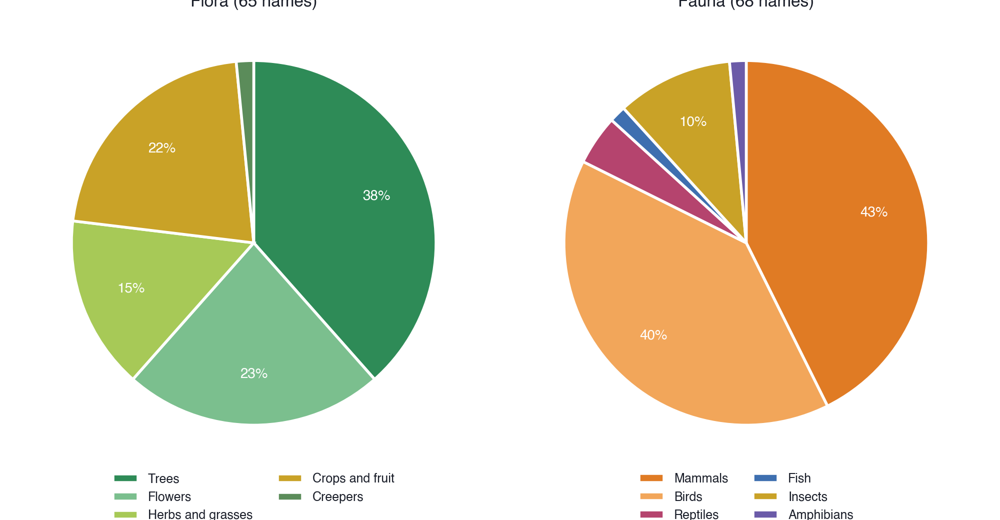
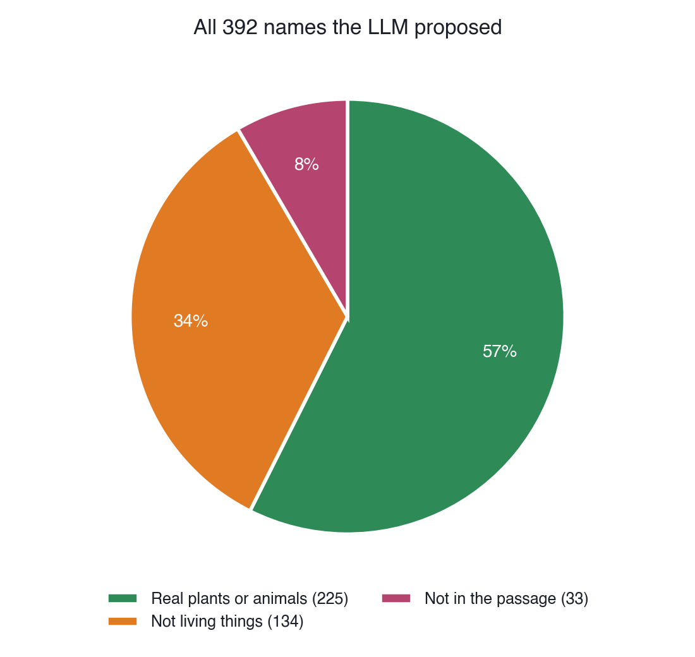
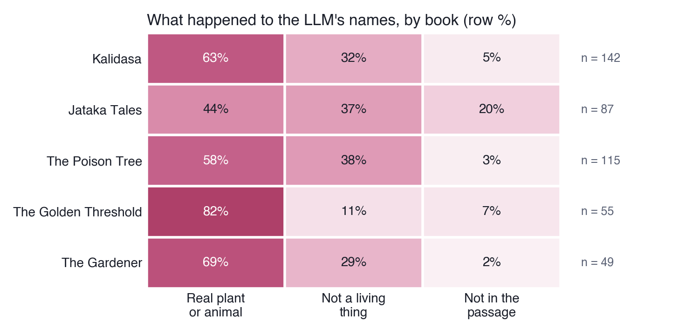

Assignment 02
Flora and Fauna in Five Indian Books, with RAG
Abstract. I collected five Indian literary texts that differ in language, period and genre, and used a Retrieval-Augmented Generation (RAG) pipeline running on my own laptop to find the plants and animals they name. The texts are Kalidasa’s plays and poems, the Jataka tales, Bankim Chandra Chattopadhyay’s novel The Poison Tree, Sarojini Naidu’s The Golden Threshold and Tagore’s The Gardener. The result is a list of 65 plants and 68 animals.
The corpus

All five are public-domain texts from Project Gutenberg, read in English:
- Kalidasa, Shakuntala and Other Works (Sanskrit, tr. Arthur W. Ryder, 1912)
- Buddhist Birth Stories (Jataka Tales), vol. 1 (Pali, tr. T. W. Rhys Davids, 1880)
- Bankim Chandra Chattopadhyay, The Poison Tree (Bengali, tr. Miriam S. Knight, 1884)
- Sarojini Naidu, The Golden Threshold (written in English, 1905)
- Rabindranath Tagore, The Gardener (Bengali, his own translation, 1913)
The RAG pipeline
- ChunkEach book is split into overlapping passages of about 250 words (844 in all).
- EmbedEvery passage becomes a vector with
nomic-embed-text. - RetrieveFor each question about trees, flowers, birds, mammals and so on, the 10 closest passages from each book are picked: 238 passages.
- Generate
qwen2.5:7breads each passage and lists the plants and animals named in it.
The code is in rag_pipeline.py. Both models run locally, so none of the text was sent to an online service.
Results

Plants (65): amaranth, ashoka, babul (acacia), bakul, bamboo, banyan, barley, bel (wood-apple), betel-nut, brinjal, casuarina, champa, coconut, coral tree, corn, cucumber, deodar, durva grass, fig, gourd, hemp, henna, hyacinth, jackfruit, jasmine, jujube, kadam, ketak (screw-pine), kusum, lichi, lily, linseed, lodh, lotus, madder, mango, mushroom, mustard, neem, nipa, oleander, orange, palm, panic grass, peach, plantain, plum, pomegranate, poppy, pumpkin, reed, rice, rose, rose-apple, sacred grass (kusha), saffron, sandalwood, silk cotton tree, siris, spring creeper, tamal, trumpet-flower, tulip, tulsi, water lily.
Animals (68): antelope, ape, bat, bear, bee, bison, boar, buffalo, bull, butterfly, carp, cat, centipede, cobra, cockroach, cow, crane, crow, cuckoo, dahuk (waterhen), deer, dhadikula, dog, dove, duck, elephant, firefly, fly, frog, gazelle, goat, goose, gull, halcyon, hare, heron, horse, jackal, kite, koel, lion, lizard, monkey, mouse, musk deer, musk-rat, nightingale, oriole, owl, ox, paddy bird (pond heron), panther, papiya (hawk-cuckoo), parrot, partridge, peacock, pig, pigeon, plover, quail, rat, sheep, snake, sparrow, spider, squirrel, starling, swan.
Checking the LLM
I read through everything the model returned. Of the 392 names it proposed, only 225 were real plants or animals. 33 did not appear in the passage at all, and 134 were other things: food, ornaments, rivers, people, even a bonti (a Bengali kitchen blade) that the model called a fish.


My interpretation
The part of this assignment I learned most from was checking the model’s answers. The mistakes were not random. In Kalidasa, plants and animals are tied to ornament and ritual (lotus-bracelets, bark dresses), so the model kept offering objects made from nature as if they were nature. In the Jataka tales the animals are characters, and the model added animals that the passage did not mention: one in five of its Jataka answers was not in the text.
My favourite case is Bankim’s heroine Kunda. Her name is a kind of jasmine, and the novel plays on it: “what if you should discover the flower, Kunda, under the trees?” The model listed her as a flower. I removed her, because here the flower is the girl, but the mistake shows how plants and people share names in this literature.
Naidu’s poems gave the cleanest results (82% correct). Her images are direct, with the champa, henna and koel named plainly. That made me think the model reads lyric poetry better than fables, which say one thing and mean another.
The lists are also limited by translation. “Nightingale” in an English translation of an Indian text is the translator’s choice, so some names tell us about the translator as much as the book.
Files
flora_fauna.py: the final lists, in the required formatrag_pipeline.py: the RAG pipelineresults/validated.json: every name with the sentence it came fromcorpus/: the five textsvisualise.py: the charts on this page